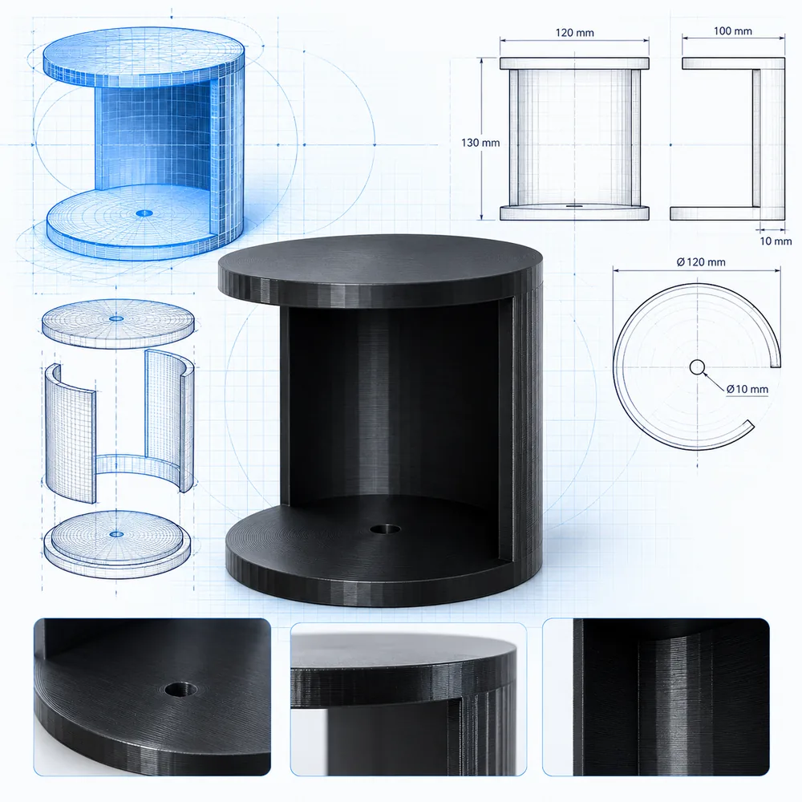

3D printing service
3D printing service in Sri Lanka
Send us your 3D model and we print it in Colombo on enclosed FDM printers, from a single prototype to a small production run.
Custom 3D printing in Colombo
3DShop.lk is a 3D printing service in Sri Lanka run by Tesla Robotics (Pvt) Ltd. from Dehiwala. We print engineering prototypes, spare parts, enclosures, brackets, robotics components, educational models and gifts on enclosed FDM 3D printers, with layer heights down to 0.16 mm.
You do not need to own a printer or know how to slice a model. Send the file, tell us the material and quantity, and we handle the rest. Printed parts are delivered island-wide by courier.
- One-off prototypes and small batches
- STL, STEP, OBJ and 3MF files accepted
- Price confirmed on WhatsApp before we print
- No model yet? We can design it

Materials we print in
The right material depends on what the part has to do. If you are unsure, tell us the job and we will recommend one.
| Material | Good for | Notes |
|---|---|---|
| PLA / PLA+ | Prototypes, display models, gifts, jigs | Easy to print with a clean finish. Softens in high heat. |
| PETG | Functional parts, enclosures, anything near moisture | Tougher than PLA and moisture-resistant. |
| ABS / ABS+ | Heat-resistant parts, brackets, automotive interiors | Prints best in an enclosed printer, which is what we use. |
| ASA | Parts used outdoors | Similar to ABS with better UV resistance. |
| TPU | Seals, grips, bumpers, flexible parts | Soft and flexible rubber-like prints. |
How to order 3D printing in Sri Lanka
- Get an estimate. Upload your STL on the instant estimate page, preview it in 3D and see a planning price in rupees.
- Request a final quote. Send your name and WhatsApp number, or use the full quote form to attach files and describe the part.
- We confirm the price. We review the model and reply on WhatsApp with the confirmed price and lead time.
- We print and deliver. Your part is printed in Colombo and sent island-wide by courier.
Want to print at home instead? Buy a 3D printer, filament and parts from our shop. See examples of finished work in the portfolio.
Frequently asked questions
How much does 3D printing cost in Sri Lanka?
The price depends on the size of the part, the material, the print settings and the quantity. Use the instant estimate page for a planning price in rupees, then request a final quote and we confirm the exact price on WhatsApp.
Which file formats can I send for 3D printing?
We accept STL, STEP, OBJ and 3MF files. If you only have a sketch or a photo, we can model it for you.
Which materials do you print in?
PLA and PLA+, PETG, ABS and ABS+, ASA and flexible TPU. Common colours are white, black, red and orange.
How long does 3D printing take?
It depends on the size, settings and quantity of the parts. We tell you the print time together with the price.
Do you deliver 3D prints outside Colombo?
Yes, island-wide by courier. We confirm the delivery time and cost when you order.